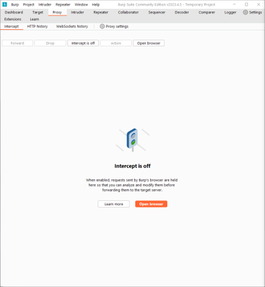
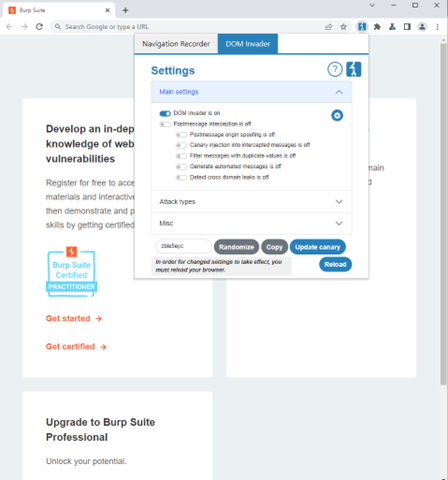
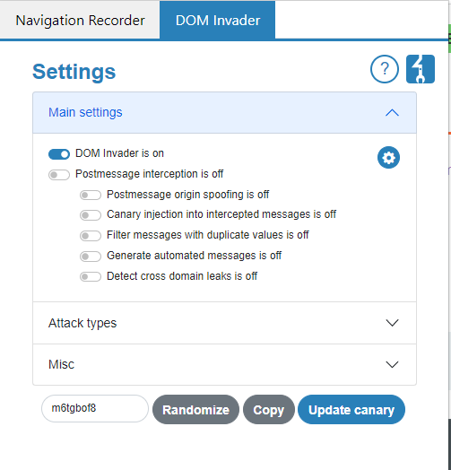
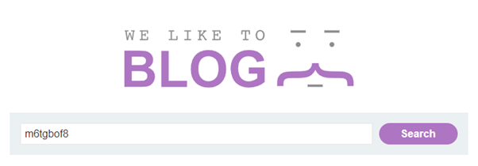
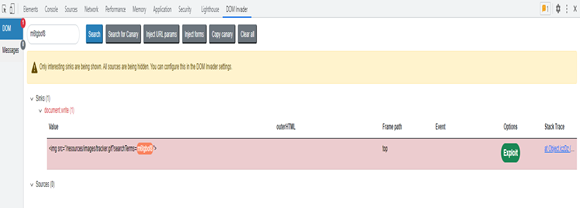
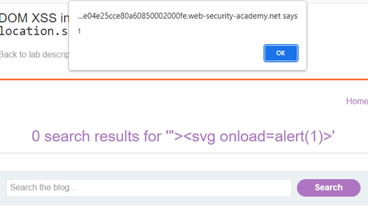

So, you've been DOM'd, an introduction to XSS for developers
XSS, three malicious letters that strike fear into the hearts of web developers. A vulnerability that is over 20 years old now and has a rich history documenting its development, being in every OWASP’s top 10 vulnerabilities from its inception in 2003 till 2017. But I’m not here to go into its history or its confusing etymology, no dear Developer, what I’m here to do is to serve as a PSA of sorts about the dangers, causes, and solutions related to this threat.
XSS, in simple terms, is a form of JavaScript/HTML injection, where an attacker tricks a website into executing code that it shouldn’t via failure to sanitize inputs or due to a lack of encoding. There are 3 main types of XSS (persistent, non-persistent, and DOM), and for the sake of brevity, we will be only covering one, DOM-based XSS, done entirely client-side, making it the weird cousin of the three.
What is a DOM?
In HTML, the Document Object Model is a method of representing the structure of a web page done by taking different elements, such as: <html> tags, <p> tags, attributes such as id’s, class, src, and plotting them onto a tree-like graph. The DOM is used by JavaScript and by extension the developer to interact and manipulate HTML documents, allowing things such as traversal via parent-child relationships and more.
[Example of DOM hierarchy from Wikipedia]
One pivotal concept of DOM XSS is that of sinks and sources, a source can be described as a Javascript or HTML element which accepts data such as form inputs, URLs or cookies. The attack needs to inject data through unsanitized sources when they parse data through properties such as document.referrer or window.location . This source is connected to a sink which is a function that uses the payload supplied by the source that can execute malicious code that it sent by an attacker, these functions or methods often directly manipulate the DOM such as setAttribute or createElement.
DOM XSS generally has a much broader scope than other Cross Site Scripting attacks, this is partially because having a vulnerable sink in your code such as element.innerHTML may be hard to break if there isn’t an appropriate source to use as an injection paradigm for a payload. The process of finding what sink a source outputs to can be automated using tools such as Burpsuite or OWASP Zap.
The damage that can be done by an XSS attack varies on a case-by-case basis. While not as impactful as a persistent XSS that stays on the system, DOM XSS can and will lead to incidents such as data breaches. One of the largest XSS attacks in the past decade was on eBays site performed by MLI in 2015 This attack caused a lot of controversy around eBays incident response strategy due to their lack of communication and plan, learn a lesson from this and be prepared to act if and when your website comes under attack by bad actors.
Here is a short example of a DOM-based XSS attack done using Burp Suite on a PortSwigger module. However, it is essential to remember that performing such activities without explicit authorization or on websites without bug bounty programs is illegal and unethical.
Steps:
- Launch Burp Suite and open a browser via the Proxy tab. 
- In the browser, click the jigsaw icon in the top right and then on the Burp Suite icon. 
- Enable DOM Invader in Burp Suite, which is used for automating attacks. 
- Randomize and copy the canary, which is used to track where the injected value ends up. 
- Enter the canary value into the field and then press "Inspect Element" to bring up DOM Invader. 
- Search for the canary value to see where it ended up. In this instance, it is placed in an image source tag.
- With this information, we can now craft a payload to break out of the string/tag and inject code to test the success.
- Inject the payload into the same input field as the canary. 
- We're in!
<img src="/resources/images/tracker.gif?searchTerms=m6tgbof8">
"><svg onload=alert(1)>
I hope this introductory guide has been useful for expanding your knowledge of potential threats that may affect your systems. For further practice with this particular attack type I would recommend PortSwigger labs, such as the one used in the example above. Additionally, a part of this webpage has a vulnerability to XSS, click on the projects tab to get started. (To remind you once again, do not use anything learnt in this lesson on websites you do not have explicit permission to test or those without bugbounties available online)